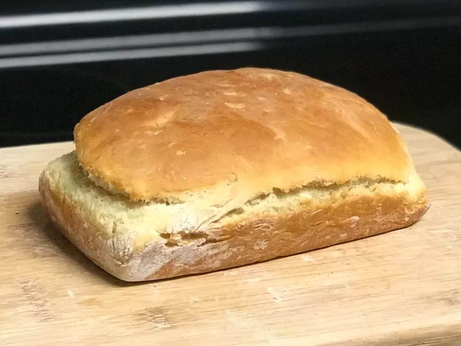

Bread In A Bag

Description:
Simple, delicious homemade bread in a bag! Great for kids who are anxious to help out with dinner. Simply squish ingredients in a large resealable bag before lightly kneading and baking.
Ingredients:
- 3 cups all-purpose flour, divided
- 1 cup warm water
- 3 tablespoons white sugar
- 1 (.25 ounce) package rapid rise yeast
- 3 tablespoons non-fat dry milk
- 3 tablespoons olive oil
- 1 ½ teaspoons salt
Steps:
- Grease an 8x4-inch loaf pan; set aside.
- Combine 1 cup flour, warm water, sugar, and yeast in a large resealable freezer bag. Squeeze most of the air out of the bag, then seal. Squish the bag with your hands until dough is well blended. Let rest at room temperature until bubbles appear, about 10 minutes.
- Stir together 1 cup flour, dry milk, oil, and salt in a bowl until combined. Pour into the resealable bag and squeeze out most of the air. Seal, then squish until well blended. Add remaining 1 cup flour to the bag; continue mixing in the same manner until well blended.
- Remove dough from the bag onto a floured surface. Knead for 5 to 8 minutes. Form into a small loaf and place into the prepared loaf pan. Cover with a towel and allow to rise until your finger leaves an impression when you gently poke the top of the loaf, about 30 minutes.
- Preheat the oven to 375 degrees F (190 degrees C).
- Bake in the preheated oven until golden brown, about 35 minutes.